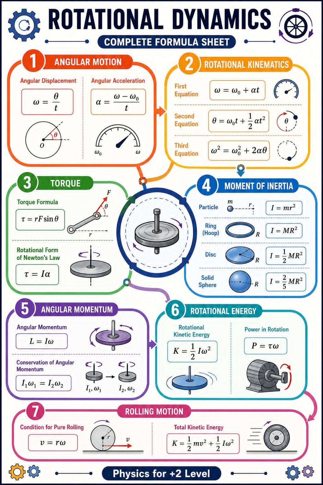

Hujan bulan Mei di Kota Bandung selalu memiliki cara tersendiri untuk memenjarakan manusia dalam ruang-ruang penuh kontemplasi. Di lantai tiga sebuah kedai kopi berarsitektur industrial minimalis di kawasan Dago Pakar, kepulan uap dari cangkir-cangkir espreso berbaur dengan aroma kertas cetak dan deru pendingin ruangan. Di atas meja kayu panjang yang kokoh, berserakan beberapa draf cetak biru sistem otomasi pabrik, laptop yang menampilkan grafik optimasi, dan sebuah papan tulis portabel berukuran sedang.
Empat orang duduk mengelilingi meja tersebut. Mereka adalah representasi dari dinamika intelektual muda Teknik Industri: Aris, sang perancang sistem yang metodis; Danu, analis optimasi yang selalu mengedepankan efisiensi matematis; Gilang, praktisi lapangan yang pragmatis; dan Citra, seorang perempuan berotak tajam yang memegang kendali atas kendali kualitas dan analisis data. Keempatnya merupakan lulusan terbaik dari salah satu universitas teknik terkemuka di Bandung, yang kini tengah berkolaborasi dalam proyek restrukturisasi lini produksi sebuah manufaktur komponen presisi skala besar.
Diskusi sore itu tidak lagi sekadar membahas manajemen rantai pasok atau tata letak pabrik yang konvensional. Mereka sedang menghadapi masalah pelik pada mesin pemutar sentrifugal berkecepatan tinggi yang baru saja dipasang di lini perakitan utama. Mesin tersebut mengalami penurunan efisiensi energi yang signifikan setiap kali mencapai kecepatan rotasi tertentu, sebuah anomali mekanis yang berdampak langsung pada biaya operasional pabrik.
Citra menggeser kacamata berbingkai tipisnya, lalu mengetuk layar laptopnya yang menampilkan visualisasi data historis. Tatapannya tajam, mencerminkan ketelitian seorang insinyur yang tidak mentoleransi adanya deviasi sekecil apa pun. Kita tidak bisa hanya melihat ini sebagai masalah ausnya bantalan luncur biasa, ujar Citra membuka percakapan. Suaranya tenang namun memiliki penekanan yang tegas. Jika kalian perhatikan pola fluktuasi konsumsi dayanya, ada ketidakberesan pada fase percepatan sudutnya. Ada kehilangan energi yang masif justru saat sistem berusaha mempertahankan kecepatan konstan.
Danu, yang sejak tadi sibuk mengotak-atik lembar kerja digitalnya, mendongak. Dia memutar pulpen di antara jari-jarinya, sebuah kebiasaan refleks ketika otaknya sedang bekerja keras menghitung probabilitas. Aku sepakat dengan Citra. Ini bukan sekadar gesekan statis. Jika kita memodelkan sistem pemutar ini dengan pendekatan mekanika rotasi murni, kita akan menemukan bahwa efisiensi sistem sangat bergantung pada bagaimana torsi diaplikasikan selama fase transisi dari kondisi diam menuju kecepatan operasional maksimum, sahut Danu.
Aris kemudian bangkit dari kursinya, mengambil spidol hitam, dan berdiri di depan papan tulis portabel. Sebagai seorang yang bertanggung jawab atas integrasi sistem, dia selalu membutuhkan visualisasi matematis untuk menjembatani teori dan implementasi fisik. Mari kita bedah dari prinsip paling mendasar dari dinamika rotasi, kata Aris sambil mulai menarik garis vertikal yang merepresentasikan sumbu putar.

Aris menuliskan persamaan kinematika rotasi di sudut kiri atas papan tulis. Kita tahu bahwa untuk mencapai efisiensi optimum, pergerakan awal dari komponen pemutar harus mengikuti pola percepatan yang terukur. Jika kita mengacu pada prinsip gerak angular, kecepatan sudut rata-rata ditentukan oleh perubahan posisi sudut per satuan waktu. Aris menuliskan rumus dasar dengan rapi:
- \( \omega \) = Kecepatan sudut (rad/s)
- \( \theta \) = Perpindahan sudut (rad)
- \( t \) = Waktu tempuh (s)
Namun, dalam kasus mesin sentrifugal kita, mesin tidak langsung berputar pada kecepatan konstan, lanjut Aris. Ada fase percepatan sudut yang harus kita perhitungkan secara cermat agar tidak terjadi beban kejut pada motor penggerak. Percepatan sudut tersebut dirumuskan sebagai:
- \( \alpha \) = Percepatan sudut (rad/s²)
- \( \omega_0 \) = Kecepatan sudut awal (rad/s)
- \( \omega \) = Kecepatan sudut akhir (rad/s)
Gilang, yang bertugas memastikan implementasi di lantai pabrik berjalan tanpa kendala teknis, menyilangkan kedua tangannya di dada. Masalahnya di lapangan, Aris, motor penggerak kita sering kali mengalami kelebihan panas justru pada detik-detik awal ketika pasokan daya mulai dialirkan. Operator melaporkan adanya suara dengungan yang tidak wajar sebelum silinder mencapai kecepatan penuh, potong Gilang dengan nada cemas.
Citra segera menyambar penjelasan Gilang. Itulah yang dinamakan inersia, Gilang. Motor penggerak terpaksa bekerja ekstra keras karena harus melawan momen inersia dari piringan sentrifugal yang masif. Ingat, distribusi massa pada komponen yang berputar itu sangat menentukan seberapa besar usaha yang diperlukan untuk memutarnya. Komponen pemutar kita berbentuk cakram padat, bukan sebuah cincin tipis atau partikel tunggal.
Citra kemudian mengambil alih spidol dari tangan Aris. Dengan cekatan, dia menggambarkan beberapa geometri benda tegar di papan tulis, menyalin esensi dari referensi desain yang mereka miliki. Jika kita menganggap komponen utama sebagai sebuah piringan atau cakram padat berdiameter luar R dengan massa total M, maka berdasarkan hukum mekanika, momen inersianya tidak sama dengan sebuah partikel tunggal yang dirumuskan dengan \( I = m r^2 \), melainkan mengikuti formulasi khusus, jelas Citra sambil menuliskan persamaan dengan guratan yang tegas:
- \( I \) = Momen inersia cakram pejal (kg·m²)
- \( M \) = Massa total cakram (kg)
- \( R \) = Jari-jari cakram (m)
Bandingkan jika komponen tersebut berupa cincin tipis berongga, lanjut Citra, yang momen inersianya adalah \( I = M R^2 \), atau sebuah bola pejal dengan \( I = \frac{2}{5} M R^2 \). Pilihan geometri cakram padat ini sebenarnya sudah ideal untuk stabilitas, namun karena kita melakukan modifikasi dengan menambahkan beberapa komponen penjepit di bagian tepi luar cakram untuk meningkatkan kapasitas produksi, kita tanpa sabar telah mengubah distribusi massa benda tersebut.
Danu mengangguk setuju, matanya berbinar menemukan titik terang dari anomali tersebut. Tepat sekali, Citra! Penambahan komponen penjepit di tepi luar berarti kita menggeser sebagian massa menuju radius maksimum R. Akibatnya, momen inersia total sistem meningkat secara signifikan melebihi nilai teoretis awal. Berdasarkan prinsip dasar hukum Newton untuk gerak rotasi, torsi yang diperlukan untuk menghasilkan percepatan sudut yang sama akan menjadi jauh lebih besar!
Danu kemudian menuliskan korelasi antara torsi, momen inersia, dan percepatan sudut di papan tulis:
$$ \tau = r F \sin\theta $$
- \( \tau \) = Torsi atau momen gaya (N·m)
- \( F \) = Gaya yang diterapkan (N)
- \( r \) = Lengan gaya atau jarak dari poros (m)
- \( \theta \) = Sudut antara arah gaya dan lengan gaya
Di sinilah letak inefisiensi yang kita cari, kata Danu bersemangat. Ketika momen inersia sistem membengkak akibat salah kalkulasi distribusi massa pasca-modifikasi, motor penggerak dipaksa mengeluarkan torsi yang jauh lebih besar dari kapasitas efisiennya. Akibatnya, konsumsi arus listrik melonjak tajam, menciptakan panas berlebih, dan menurunkan performa motor secara drastis sebelum mencapai kecepatan operasional.
Atmosfer di dalam ruangan kedai kopi itu semakin intens. Di luar, hujan kota Bandung kian deras, membasahi kaca jendela besar yang menampilkan siluet lampu-lampu kota di kejauhan. Keempat insinyur muda itu kini semakin tenggelam dalam simulasi matematis mereka. Mereka tahu bahwa penyelesaian masalah ini membutuhkan pendekatan yang komprehensif, tidak hanya memperbaiki komponen fisik, tetapi juga memprogram ulang algoritma kendali motor penggerak.
Aris meminum kopinya yang mulai mendingin sebelum kembali berbicara. Jika kita ingin merekayasa ulang sistem kendali motor, kita harus memahami karakteristik kinematika rotasi selama fase transisi secara mendalam. Kita bisa menggunakan tiga persamaan utama kinematika rotasi untuk menentukan waktu optimum dan percepatan sudut yang konstan agar tidak merusak komponen mekanis, urai Aris.
Dia kemudian menjabarkan tiga persamaan tersebut secara berurutan di papan tulis:
$$ \theta = \omega_0 t + \frac{1}{2} \alpha t^2 $$
$$ \omega^2 = \omega_0^2 + 2 \alpha \theta $$
Sistem Persamaan Kinematika Rotasi Konstan
Dengan memanipulasi nilai percepatan sudut melalui pengaturan variator frekuensi pada motor, kita bisa memastikan bahwa proses percepatan terjadi secara gradual namun efisien, tambah Aris sambil menunjuk pada ketiga persamaan tersebut. Kita bisa menentukan nilai posisi sudut akhir dan kecepatan sudut yang diinginkan tanpa harus membebani motor di awal gerakan.
Gilang mengamati draf mekanis di depannya, mencoba menyelaraskan teori fisis tersebut dengan realitas operasional di pabrik. Berarti, jika kita memperpanjang waktu akselerasi secara lembut menggunakan sistem kendali otomatis, kita dapat menekan kebutuhan torsi sesaat pada awal putaran? tanya Gilang memastikan.
Secara teori, ya, jawab Citra. Namun, kita juga harus ingat bahwa dalam industri manufaktur modern, waktu adalah uang. Kita tidak bisa memperpanjang waktu akselerasi terlalu lama karena akan memperpanjang waktu siklus produksi secara keseluruhan. Kita harus menemukan titik optimal di mana konsumsi energi minimum namun target waktu siklus tetap terpenuhi. Untuk itu, kita perlu menganalisis aspek energetika dari sistem ini.
Citra kemudian menjelaskan aspek energi kinetik rotasi yang menjadi kunci utama dari perhitungan efisiensi ini. Energi yang disalurkan oleh motor penggerak diubah menjadi energi kinetik rotasi pada cakram sentrifugal. Persamaan untuk energi kinetik rotasi adalah:
- \( K \) = Energi kinetik rotasi (Joule)
Dan daya yang dihantarkan oleh sistem transmisi roda gigi ke cakram tersebut selama proses rotasi berlangsung dapat dihitung melalui hubungan antara torsi dan kecepatan sudut, lanjut Citra, menuliskan rumus daya rotasi:
- \( P \) = Daya mekanis putaran (Watt)
Perhatikan hubungan ini, Citra mengetuk papan tulis dengan ujung spidolnya. Daya berbanding lurus dengan torsi dan kecepatan sudut. Jika pada kecepatan sudut tinggi kita masih membutuhkan torsi yang besar akibat adanya getaran atau gaya hambat luar, maka daya listrik yang diserap akan membubung tinggi. Inilah penyebab utama mengapa tagihan listrik lini produksi tersebut melonjak tajam sejak modifikasi dilakukan.
Danu merebahkan punggungnya di sandaran kursi kayu, menatap langit-langit kedai kopi sejenak sebelum mengeluarkan draf analisis momentumnya. Jangan lupakan satu hal yang sangat krusial dalam sistem mekanika berputar, teman-teman: Hukum Kekekalan Momentum Sudut. Ketika sentrifugal beroperasi pada kecepatan tinggi, setiap perubahan distribusi massa di dalam sistem—misalnya akibat pergeseran posisi material yang sedang diproses di dalam silinder—akan langsung memengaruhi kecepatan sudut secara spontan jika tidak ada torsi luar yang mengoreksinya.
Danu menuliskan prinsip momentum sudut dan hukum kekekalannya:
$$ I_1 \omega_1 = I_2 \omega_2 $$
- \( L \) = Momentum sudut (kg·m²/s)
- \( I_1, I_2 \) = Momen inersia kondisi awal dan akhir
- \( \omega_1, \omega_2 \) = Kecepatan sudut kondisi awal dan akhir
Di mana jika terjadi fluktuasi nilai momen inersia akibat pergeseran posisi material di dalam silinder dari keadaan pertama ke keadaan kedua, kecepatan sudut akan berubah secara otomatis untuk menjaga momentum sudut tetap konstan. Perubahan kecepatan sudut yang mendadak ini memicu beban dinamis yang merusak transmisi roda gigi kita, papar Danu secara rinci.
Diskusi yang berjalan selama berjam-jam itu akhirnya mulai mengerucut pada sebuah solusi konkret. Solusi tersebut tidak hanya melibatkan perbaikan struktur fisik komponen, tetapi juga integrasi sistem kontrol yang lebih cerdas, sebuah pendekatan khas Teknik Industri yang selalu memandang sistem secara holistik.
Gilang mengambil selembar kertas kosong dan mulai merancang jadwal implementasi di lapangan. Jadi, langkah pertama kita adalah melakukan penyeimbangan ulang terhadap cakram sentrifugal tersebut. Kita harus memastikan bahwa massa tambahan dari komponen penjepit didistribusikan secara merata untuk meminimalkan deviasi momen inersia. Langkah kedua, kita akan menerapkan kondisi gelinding murni pada sistem transmisi sekunder jika memungkinkan, atau setidaknya memastikan bahwa tidak ada slip antara roda gigi penggerak dan poros utama, kata Gilang.
Aris tersenyum mendengar penjelasan Gilang. Berbicara tentang kondisi gelinding murni atau rolling motion, prinsipnya sangat elegan. Sebuah silinder atau roda dikatakan menggelinding murni di atas permukaan jika titik kontak antara roda dan permukaan berada dalam keadaan diam sesaat terhadap permukaan tersebut. Persyaratan untuk terjadinya kondisi gelinding murni ini adalah hubungan linier yang sempurna antara kecepatan linier pusat massa dan kecepatan sudutnya:
- \( v \) = Kecepatan linier pusat massa (m/s)
- \( r \) = Jari-jari roda atau silinder (m)
Jika kondisi ini terpenuhi pada sistem transmisi sekunder kita, maka total energi kinetik dari sistem tersebut merupakan penjumlahan dari energi kinetik translasi pusat massanya dan energi kinetik rotasi terhadap pusat massanya, tambah Aris seraya menuliskan formula total energi kinetik untuk gerak menggelinding:
- \( m \) = Massa total benda bergerak (kg)
- \( K \) = Energi kinetik total sistem (Joule)
Dengan memastikan transmisi kita bekerja mendekati kondisi ideal ini, kita bisa meminimalkan energi yang terbuang menjadi panas akibat slip atau gesekan yang tidak perlu, tegas Aris.
Citra mengumpulkan draf-draf yang berserakan, menyatukannya ke dalam sebuah map dokumen yang rapi. Analisis kita sudah sangat solid secara teoretis dan praktis. Kita menggabungkan pemahaman mekanika murni dengan optimasi sistem industri. Aku akan menyusun laporan ini menjadi sebuah proposal rekomendasi teknis yang komprehensif untuk pihak manajemen pabrik besok pagi.
Danu mematikan laptopnya, lalu mengepalkan tangan seraya tersenyum puas setelah berjam-jam menganalisis pemodelan matematika. Ini adalah bukti nyata bahwa dinamika rotasi bukan sekadar bab rumit di buku teks fisika masa kuliah dulu. Di tangan para insinyur industri yang tepat, rumus-rumus ini bertransformasi menjadi instrumen efisiensi yang mampu menghemat biaya operasional ratusan juta rupiah per bulan.
Hujan di luar mulai mereda, meninggalkan aroma tanah basah yang khas di udara Bandung yang sejuk. Lampu-lampu jalanan di kawasan Dago Pakar mulai menyala satu per satu, menciptakan pemandangan malam yang menenangkan setelah seharian penuh dengan pergulatan intelektual. Keempat insinyur muda tersebut meninggalkan kedai kopi dengan langkah penuh keyakinan. Mereka tidak hanya berhasil memecahkan sebuah teka-teki mekanis yang rumit, tetapi juga membuktikan sekali lagi bahwa kolaborasi ilmiah yang berlandaskan kecerdasan, ketelitian, dan semangat inovasi akan selalu mampu menghasilkan solusi terbaik bagi dunia industri modern.